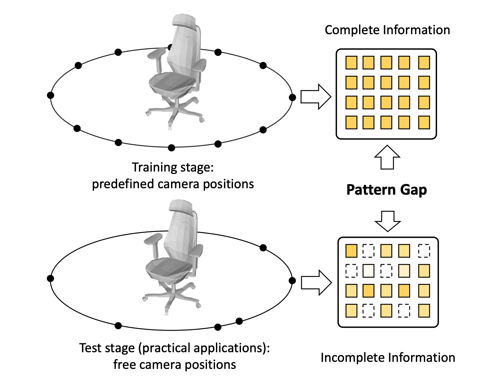
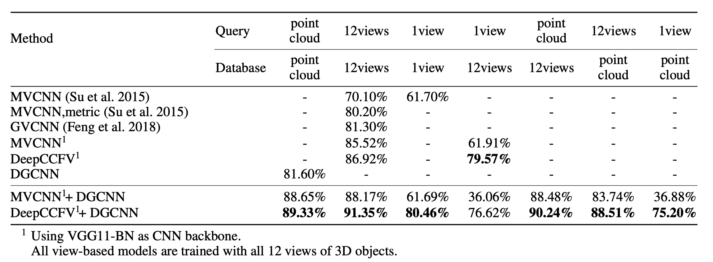

用于3D对象检索的无相机无约束多视图卷积神经网络
黄正跃， 赵哲晖， 周恒光
基于多视图的立体对象表征被广泛用在分类和检索等识别任务上。本文关注立体对象的检索任务，目前的方法在训练时通常会使用一个对象相对完整的视图信息进行训练，但是我们发现这样完整的训练数据并不能让网络在仅有部分视图的环境下获得好的泛化能力，甚至不如使用不完整的视图训练集得到的效果好，这显然不是我们想要的结果，它妨碍我们实现自由相机位置设定下的检索系统，使得我们不能仅通过扩充完整的训练集达到目的。我们猜想，导致这个问题的原因时缺失视图的特征分布与完整视图时的特征分布存在差异(图1)导致训练时过拟合。为了解决这个问题我们提出了DropMax特征增强模块，它在很大程度上解决了这个问题，让我们有可能高效实现Camera-Constraint-Free的检索系统。

Figure 1. 训练和测试时的特征分布差异，这使得深度模型在完整视图数据上训练的结果难以泛化到真实场景中视图缺失/不完整的情况。
实验结果
DropMax使原有方法在缺失90%数据的情况下，仍然保持原来90%的性能。

Figure 2. 设定随机的相机位置，不同方法在ModelNet40上检索的结果（mAP作为指标）。在测试时只有一个视图的情况下（数据严重缺失）DeepCCFV在使用VGG11-BN和ResNet50的backbone上分别达到74.49% and 78.63%的性能, 这比MVCNN高了13.69%和32.02%。在12视图（视图相对完整）时，我们的方法达到 82.87% 和 87.98% 的性能，这比MVCNN高了6.91%和11.75%。可以看到我们的方法能使原有方法更具鲁棒性，尤其是在视图数据严重缺失的时候。

Figure 3. 视图--点云跨模态检索的情况，可以看到我们的方法在跨模态检索中仍然能有很好的性能表现。
Publications
DeepCCFV: Camera Constraint-Free Multi-View Convolutional Neural Network for 3D Object Retrieval.
AAAI Conference on Artificial Intelligence (AAAI), 2019.